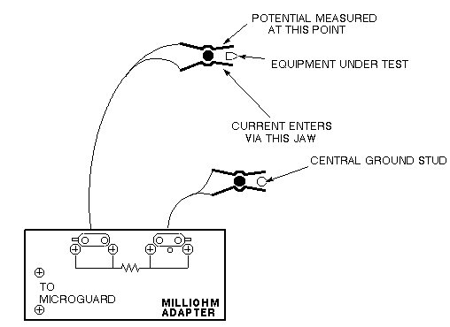
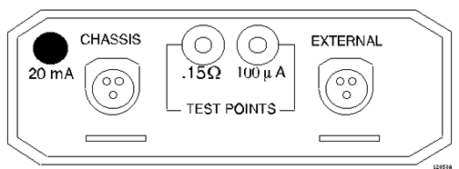
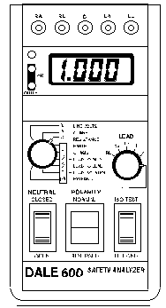

Operating Documentation
Direction 5500113, Rev# 3
Discovery MR450 1.5T Service Methods
Module Version 2.0, Version Date 8/19/08
Operating Documentation |
| Required Persons | Preliminary Reqs | Procedure | Finalization |
|---|---|---|---|
| 1 | Not Applicable | 60 mins | 5 mins |
Be sure to understand the preliminary requirements before beginning this procedure
Table 1: Methods for Ground Resistance Checks
| This section covers two methods of checking Ground Resistance. Ground Resistance Checks Using Microguard, Using Microguard, or Ground Resistance Checks Using Dale (For Those sites equipped with a Dale 600, 600E, 601, or 601E Safety Analyzer), Using Dale 600/600E or 601/601E Safety Analyzer. |
| Item | Qty | Effectivity | Part# | Manufacturer | |
|---|---|---|---|---|---|
| Dale 600 or 601 (120VAC) or Dale 600E or 601E (220VAC) Safety Analyzer | 1 | - | 600/601: 46-285647P1 or 46-328406G1 | - | |
| - | - | - | 600E/601E: 46-285647P14 or 46-328406G2 | - | |
| Bio-design MG5 meter (Microguard) with Milliohm Adapter | 1 | - | 46-194427P16 | - | |
| Personal Lock | 2 | - | 46-194427P320 | - | |
| Red Warning LOTO Tag | 2 | - | 46-194427P322 | - | |
| Multi-locking Device (If multiple service people) | 1 | - | 46-194427P313 | - | |
| Digital voltmeter (optional) | 1 | - | - | - | |
| Item | Qty | Effectivity | Part# | Manufacturer |
|---|---|---|---|---|
| Ground Wires | as needed | - | - | - |
| ||||
| Electrocution Hazard! | ||||
| LETHAL VOLTAGES ARE PRESENT WITHIN THE PDU EVEN WHEN ALL PDU BREAKERS ARE OFF. | ||||
| CHECK THAT POWER AT THE MAIN DISCONNECT IS OFF, LOCKED, AND TAGGED BEFORE PROCEEDING. |
| Condition | Reference | Effectivity |
|---|---|---|
Any required electrical code inspection | - | - |
Installation of the facility disconnect device | - | - |
EMERGENCY OFF wiring | - | - |
PDU primary wiring | - | - |
PDU subsystem power cables | - | - |
Refer to the System Installation Manual. Power Cable Installation Instructions | - | - |
No hard wired signal cables connected to any subsystem cabinets. Fiber Optic cables may be connected and not impact this check. | - | - |
Notify all Field Service Engineers working at the site that the Main Disconnect is being shut off, locked out, and tagged out.
Locate and shut off the Main Disconnect which supplies power to the Power Distribution Unit (PDU) and Heat Exchanger Cabinet (HEC) .
Check that the Main Disconnect and PDU indicator lights are off and that the power switches are inactive.
With a digital voltmeter (DVM) check that all energy has dissipated.
Plug the milliohm adaptor module into the power outlet of the Microguard (see Illustration 1).
Illustration 1: Microguard Connections

| NOTE: | Since the Microguard is being used solely as a voltmeter in this application, any other meter capable of resolving 0.1 millivolts can be substituted in the next step. Meters other than the Microguard are currently in use. Refer to the appropriate tool catalog for further information. |
Attach the Microguard red and black leads to the meter posts of the milliohm module.
Set the Microguard Patient Lead Tester switch to All Other Tests.
Set the Microguard Selector switch to 20 Microamps/Millivolts.
Set the Microguard Input switch to Red and Black Probes.
Attach the Kelvin leads. Connect one lead to the PDU ground bus bar and the other lead to the frame of the subsystem cabinet under test (see Illustration 1).
The meter reads voltage across ground resistance in millivolts. To obtain the resistance in milliohms, multiply the meter reading by 2.
Verify that the measured resistance is less than 100 milliohms (corresponding to a meter reading of 50 millivolts). If this fails, add an additional ground wire from the failing cabinet to the central ground stud.
Restore the system:
Turn the Microguard power off.
Remove the leads and the milliohm adapter from the Microguard.
Close all subsystem cabinets and the PGR cabinet.
Notify all Field Service Engineers working at the site that the Main Disconnect is being shut off, locked out, and tagged out.
Locate and shut off the Main Disconnect which supplies power to the PDU and HEC.
Check that the Main Disconnect and PDU indicator lights are off and that the power switches are inactive.
With a DVM, check that all energy has dissipated.
Connect one clamp-type lead to the EXTERNAL jack on the top of the Dale safety analyzer. Connect the other clamp-type lead to the CHASSIS jack on the top of the Dale safety analyzer (see Illustration 2).
Illustration 2: Top of Dale Safety Analyzer

On the Dale safety analyzer, set the main selector switch to W - RESISTANCE (see Illustration 3).
Illustration 3: Dale Safety Analyzer

Plug the Dale safety analyzer into an AC outlet.
On the Dale safety analyzer, verify that the two OKLEDs (light emitting diodes) light up to indicate the AC outlet is properly wired (see Illustration 3).
With the leads not touching each other, the display should read 1.00. With the leads touching (copper to copper), the display should read 0.00 to 0.02.
Attach the leads. Connect one lead to the PDU ground bus bar and the other lead to the bare frame of the subsystem cabinet under test (see Illustration 4).
Illustration 4: Dale Safety Analyzer

| NOTE: | The Dale safety analyzer reads resistance in ohms. For example, a reading of 0.50 equals 500 milliohms. |
Check that the measured resistance is less than 100 milliohms. If this fails, add an additional ground wire from the failing cabinet to the central ground stud.
Restore the system:
Unplug the Dale safety analyzer from the AC outlet.
Remove the leads from the Dale safety analyzer.
Close all subsystem cabinets and the PGR cabinet.
Perform a Check Scan.
Return to the main procedure (Grounding and Leakage Current Checks) or proceed to the Ground Leakage Current Test.